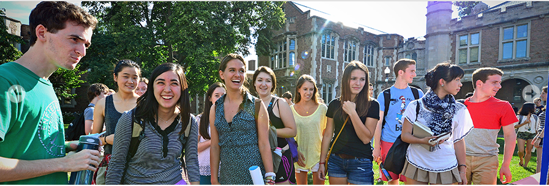

Transfer Students
| Academics | Research | Campus Life |
|---|

Hi transfer students!
Transitioning from one school to another is not easy, and breaking into the social circles that have been well established could be very tricky. How to handle the new environment and friends while keeping up with your school work? We hope you find out the solution after browsing the resources that we offered.
Love,
Transfer Students Center
Resource Overview
Facts |
Resources |
|---|---|
Previous School |
Transfer Students Organization |
Hometown |
Discovering WashU |
Nationality Breakdown |
Plans for New School |
Students Experience
|
|
|---|---|
|
| Contact us | About us | Advice & Suggestions |
|---|